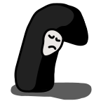
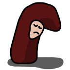

This site contains three web apps (linked below) testing three different flavours of the launch_handler web app API. This uses the launch_handler origin trial available in Chrome 98.0.4738.0 to 110.

Sulky Lopsided Black Bean
launch_handler: { client_mode: navgate-existing }

Sulky Lopsided Brown Bean
launch_handler: { client_mode: focus-existing }
Sulky Lopsided White Bean
launch_handler: { client_mode: navigate-new }
The above links go to web apps that test out specific launch_handler configurations. Screencast: https://www.youtube.com/watch?v=EZFnGuIUfrc Share button:
Self-navigation links: